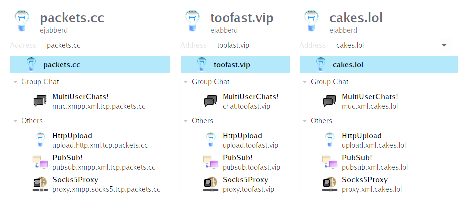

┃┗┫┗┳━┳┳┳┳━┳━┳┛┣━┳┳┫┗┫┗┳━┳┳┓
┃┏┫┃┃┻┫┃┃┃╋┃╋┃╋┃━┫┃┃┏┫┏┫┻┫┏┛
┗━┻┻┻━┻━━┻━┻━┻━┻━┻━┻━┻━┻━┻┛
Videos :: All Posts :: Tags :: RSS :: IMG :: About :: Test ::
THE.ARMADATrials with ejabberd XMPP server
Since the last post on this site (apoligies, it was a while ago) I was using prosody software for my xmpp server that I host. Over the last winter I managed to get a Movim instance running on my old server instance. Movim is a cool little XMPP based social media platform that was originally just a websockets based XMPP web client but has additional RSS like functions too. It was a real pleasure to host once I had finally gotten it to work. I discovered that Movim was better suited on an ejabberd server over a prosody server and because I couldn't actually engage with a community and all the community posts would only be commentable by the post author (myself or a contributor) I ended up learning how to run an ejabberd server. There's still stuff I have to learn like the erlang shell on a running instance and how to convert the limited mnesia database to MySQL but movim had quite a lot of particular wants from the XMPP server side.
What I found about ejabberd was that it sure is overly complicated. One of the first things I realized is that if I restart the ejabberd systemd service then everyone gets booted out of the MUC chats and has to have their clients reinitiate a connection to come back. This was a bit bothersome but there's a command `ejabberdctl reload_config` that can load *most* things but not all things in place on a running service. Ejabberd also spawns a whole schematic of erlang based stuff. I've never used any erlang stuff before then but it spawns a couple of listeners so if you don't have a firewall their ports are default open and respond to God knows what.. Telnet or Netcat would touch those sockets... Would epmd consent? Yes if no firewall.
Another thing about ejabberd is that yes it is in fact really low on resource usage and the configuration abilities are, despite myself finding great anger, lol, in trying to get it to work for stuff that is way much simpler to do in prosody configs, ejabberd config abilities are vast. Very vast and the documentation is actually really decent. Really really appreciate the level of documentation for ejabberd online. However there is barely any communicable support to be found except perhaps in the ejabberd xmpp chat.
I eventually, and this is the point of this post really, found out how to actually configure vhosts so that custom domains work. Ejabberd has some defaults for things like muc subdomain, pubsub and upload subdomains. It simply will want to default to pubsub.domain.vip, upload.domain.vip, conference.domain.vip, which for me is an asbolute no. I love my domains, and I've struggled immensely since operating ejabbed about almost 6 months now. It turns out that you have to create a whole subsection for the vhosts and that only piece of infortmation I actually found in the ejabberd man page. Of all places. The ejabberdctl, or ejabberd.yml, or one of those man pages explains a LOT. I found that ironic since their online documentation explains a lot too.
Hers's a couple pics of the radical domain schemes I am using:

Most of these are unused to be honest. I challenged myself to do two things: solve my OCD with packets.cc using pubsub.packets.cc (which does not follow my naming scheme), to use custom names for each service for each vhost, use 3 vhosts (which are main domains not subs) and to make it bloody work. I am very pleased with my work after it did take me about 10 hours and I had in that time made a few big mistakes and hurled myself over two very problematic errors. Namely that on ubuntu ejabberd did not even work, at all, even with a basic config. That was a serious piss off because I had dusted my previous host partly out of anger and partly by accident to use another distro hoping to get past the original ABSOLUTE WTF-ING WTF.COM error I was having on an OpenSUSE host. These both mind boggling errors, and admittedly not aided in any way by the way overcomplicated nature of ejabberd's log output and structure, caused me to destroy one operational and one more distro server host and start again. Now I also have a habit of just hitting the fuckit button and starting over as it does not leave a lingering feeling of old configs to mash up new work. I settled on trusty old debian and she runs happy now.
It might seem that most if not all of what I've done is complain about ejabberd but I honestly actually like it. I also really like the massive configuration abilities and the seperated sections for configuration (now that I've discovered more about that). I am pretty sure, for compliance of as much future tinkering as I might do, I will remain on ejabberd because it has it all and more. Notably the API where it offers basically all of the same options as ejabberdctl command on shell interpreter. I want to use slixmpp and see if it will interface with a XEP plugin or something with ejabberd API (which runs on http host of ejabberd) so I can do some funky bot stuff.
My score for this software at time of posting is ✪✪✪✪✪✪✫✫✫✫ [6/10]
Tags: xmpp, ejabberd, sysops, hosting, toofast.vip, jabber, chats